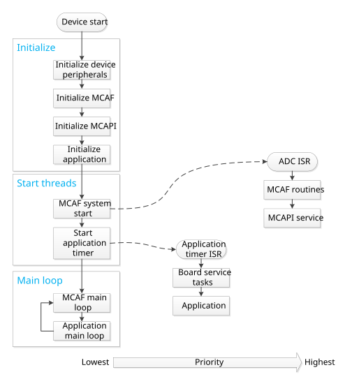
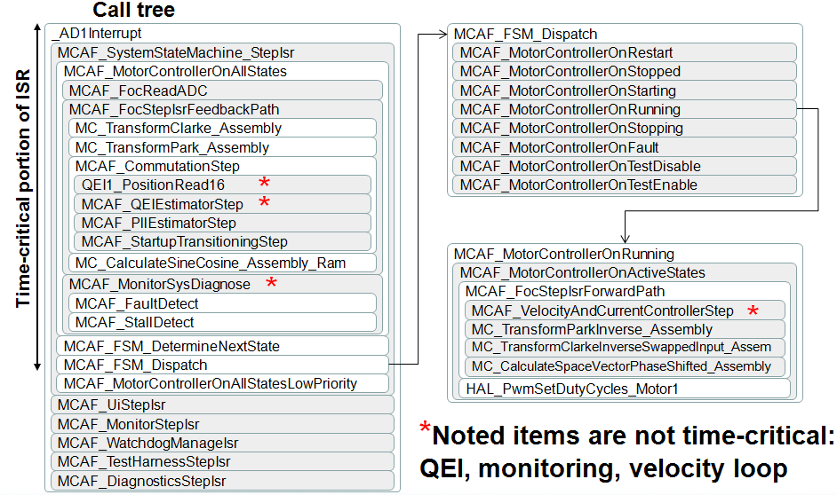

3.6. 调度与优化¶
3.6.1. 调度¶
3.6.1.1. 需求¶
MCAF 在调度方面有以下需求：
3.6.1.2. 实现说明¶
MCAF 调度器架构相当简单。它使用协作调度，包含一个主线程（从 main() 函数的入口点）和各一个 ISR 分别用于应用定时器中断和 ADC 中断。

图 3.3 流程图展示了主线程、应用定时器中断和 ADC 中断¶
主线程包含在启动时运行一次的初始化函数，以及一个用于执行非时间关键任务的主循环。
应用定时器处理没有硬实时要求的周期性应用和板级相关任务。
ADC ISR 处理时间关键的任务，并与 PWM 周期同步执行：
ADC ISR 在所有转换完成时触发
PWM 时序裕量设计用于确保寄存器赋值与更新之间的时间足以满足关键控制延迟要求（见 图 3.4）

图 3.4 控制 ISR 与 PWM 之间的时序关系。 中心对齐 PWM 通常可配置为单更新或双更新模式；在单更新模式下，PWM 发生器在每个 PWM 周期开始时从软件寄存器更新，产生对称波形；而在双更新模式下，PWM 发生器在每个 PWM 周期的开始和中心处从软件寄存器更新，产生可能非对称的波形，更新速率翻倍。在每种情况下，关键代码代表从 ADC 读数计算新 PWM 值所需的计算，并应在下一次 PWM 发生器更新之前完成。¶
剩余的 CPU 时间足以进行其他计算：
同样时间关键的任务，但其要求不那么严格
需要与在 ADC ISR 速率下运行的任务有一定程度协调的任务，因此在主循环中重新定位比较棘手
任务的一些示例包括
每 N 个 ISR 运行一次的速度环（例如 N=20）
在 ADC ISR
在主循环中较慢运行的用户界面和诊断内核元素
3.6.1.2.1. 协作调度¶
“协作调度”一词意味着每个任务在下一次执行之前运行至完成而不阻塞；不存在一个操作系统在任务完成之前抢占式地切换执行线程。
在这种方法中，调度约束必须由设计者显式处理，而不是像操作系统那样在运行时处理。典型的约束包括
调度约束可以手动检查，通过使用 测试框架的时间戳功能 来记录定时器值，以确保最坏情况执行时间是可接受的。
3.6.1.2.2. 调用树¶
示例调用树如下 图 3.5所示。这展示了 ADC ISR中发生的许多（但不是全部）函数调用。读取 ADC 与更新 PWM 占空比之间的时间应涉及时间关键任务；其他任务通常应推迟。MCAF 版本 1.0 包含一些我们计划在 PWM 更新之后移动的次要例程，以最小化关键控制延迟。

图 3.5 ¶
3.6.1.2.3. 线程安全¶
由于主线程可能被控制 ISR 中断，共享状态必须小心处理。
此共享状态用 volatile 限定符标记，以使编译器不会做出错误假设。共享状态包括：
外部接口数据在
motor.ui(system_state.h)测试框架信息在
motor.testing和systemData.testing(system_state.h)看门狗状态在
watchdog(isr.c 和 main.c)MCAPI 电机数据在
motor.apiData(system_state.h)
MCAF 中涉及此共享状态的线程安全问题已按如下方式解决：
没有单个共享数据项大于 16 位（每项可以在 dsPIC 16 位架构中原子读取和写入）
MCAF 不要求多个数据项之间的状态相互一致
唯一有多个写入者的共享状态是
watchdog.isrCount，其中主线程与控制 ISR 线程之间的交互简单且不易出现并发错误（主线程将计数置零且不读取计数；控制 ISR 递增计数且不被主线程中断）MCAPI 从主线程执行的函数使用
motor.apiData.apiBusy标志来声明对共享 MCAPI 电机数据结构的所有权，同时执行代码的关键部分。参见 MCAPI 部分， 处理并发，了解更多信息。
如果将来需要更严格的并发要求，共享状态将通过额外手段保护，例如短暂禁用中断，或使用非阻塞的线程安全数据结构。
3.6.2. 优化¶
MCAF 有四个影响执行时间需求的要求：
提供指定的功能集（以控制 ADC ISR 速率运行的特定算法系列）
在 XC16 中以
-O1编译器优化级别满足时序要求（-O2和-O3更快，但仅在 XC16 的高级许可证中可用）模块化且可维护：遵循良好的软件工程实践
高效，以便为客户应用留出足够的 CPU 周期
这些要求构成了一个有趣的困境。良好的软件工程实践鼓励将大型、复杂的软件函数重构为小型、简单、可维护的函数，每个函数处理单一、明确的目的。但在 C 语言中这样做会增加额外的栈帧，往往会增加执行时间。在更新速率高的系统中，这可能非常显著。
例如，以下代码包含一个函数 pwm_clip_and_update 用于将一组 3 个占空比值约束在允许的范围内并写入硬件寄存器：
#include <stdint.h>
#include <xc.h>
typedef struct {
uint16_t duty[3];
} pwm_t；
typedef struct {
uint16_t min；
uint16_t max；
} limits_t；
void pwm_clip_and_update（pwm_t *ppwm，
const limits_t *plimits）
{
if （ppwm->duty[0] >= plimits->max）
ppwm->duty[0] = plimits->max；
if （ppwm->duty[0] <= plimits->min）
ppwm->duty[0] = plimits->min；
if （ppwm->duty[1] >= plimits->max）
ppwm->duty[1] = plimits->max；
if （ppwm->duty[1] <= plimits->min）
ppwm->duty[1] = plimits->min；
if （ppwm->duty[2] >= plimits->max）
ppwm->duty[2] = plimits->max；
if （ppwm->duty[2] <= plimits->min）
ppwm->duty[2] = plimits->min；
PDC1 = ppwm->duty[0];
PDC2 = ppwm->duty[1];
PDC3 = ppwm->duty[2];
}
pwm_clip_and_update() 函数体仅有 16 行，但可以进一步简化为处理裁剪和更新硬件寄存器的子函数：
void clip_u16（uint16_t *px， const limits_t *plimits）
{
if （*px >= plimits->max）
*px = plimits->max；
if （*px <= plimits->min）
*px = plimits->min；
}
void set_pwm（const pwm_t *ppwm）
{
PDC1 = ppwm->duty[0];
PDC2 = ppwm->duty[1];
PDC3 = ppwm->duty[2];
}
void pwm_clip_and_update（pwm_t *ppwm， const limits_t
*plimits）
{
uint16_t *px = &ppwm->duty[0];
clip_u16（px， plimits);
clip_u16（++px， plimits);
clip_u16（++px， plimits);
set_pwm（ppwm);
}
现在我们有了最大函数体长度为 5 行的函数，每个都更简单。此外，更容易避免如下所示的复制粘贴错误：
void pwm_clip_and_update（pwm_t *ppwm，
const limits_t *plimits）
{
if （ppwm->duty[0] >= plimits->max）
ppwm->duty[0] = plimits->max；
if （ppwm->duty[0] <= plimits->min）
ppwm->duty[0] = plimits->min；
if （ppwm->duty[1] >= plimits->max）
ppwm->duty[1] = plimits->max；
if （ppwm->duty[1] <= plimits->min）
ppwm->duty[1] = plimits->min；
if （ppwm->duty[1] >= plimits->min） // OOPS
ppwm->duty[2] = plimits->max；
if （ppwm->duty[2] <= plimits->min）
ppwm->duty[2] = plimits->min；
PDC1 = ppwm->duty[0];
PDC2 = ppwm->duty[1];
PDC3 = ppwm->duty[2];
}
我们编译了 代码清单 3.17 和 代码清单 3.18 中的代码，使用 XC16 1.25 针对 dsPIC33E256MC506，并分析了最大周期计数的结果：
-O1 |
-O2 |
-O3 |
|
|---|---|---|---|
代码清单 3.17 ——一个大函数 |
56 |
49 |
49 |
代码清单 3.18 ——重构后 |
105 |
49 |
49 |
代码清单 3.20 ——重构 + 内联 |
56 |
49 |
49 |
中的重构 代码清单 3.18 在 -O1 下增加了 49 个周期，但在 -O2 或 -O3下则没有。为什么？
33E 架构中函数调用的开销为
RCALL: 4 cyclesRETURN: 6 cycles符合函数调用约定的寄存器设置（
W0–W7由调用者保存，用于参数和返回值；W8–W14由被调用者保存）
重构后的 pwm_clip_and_update 包含 4 次函数调用，因此 RCALL 和 RETURN 指令增加了 40 个额外周期，其余 9 个周期涉及符合函数调用约定的寄存器移动。
在 -O2 和 -O3 优化下，XC16 编译器会自动内联小函数。我们可以通过添加 -O1 关键字来强制 XC16 在 inline 下执行此操作：
inline void clip_u16（uint16_t *px， const limits_t *plimits）
{
if （*px >= plimits->max）
*px = plimits->max；
if （*px <= plimits->min）
*px = plimits->min；
}
inline void set_pwm（const pwm_t *ppwm）
{
PDC1 = ppwm->duty[0];
PDC2 = ppwm->duty[1];
PDC3 = ppwm->duty[2];
}
void pwm_clip_and_update（pwm_t *ppwm， const limits_t
*plimits）
{
uint16_t *px = &ppwm->duty[0];
clip_u16（px， plimits);
clip_u16（++px， plimits);
clip_u16（++px， plimits);
set_pwm（ppwm);
}
这种技术在 MCAF 中经常使用，以保持低执行时间，同时仍允许模块化重构。您会看到 inline 和 inline static 在非常简单或仅调用一次的函数中频繁使用。
如果您有兴趣在自己的代码中使用 inline ，请在开始随意使用之前阅读以下部分。
3.6.2.1. 内联完全指南：入门¶
inline 关键字在 C 中是一个工具，与所有工具一样，它可以被恰当使用，也可以被不当使用。需要记住两点：
请注意，在 C 中，
inline关键字是对编译器的一个 提示 ，而非要求。 理论上编译器可以自由忽略它；在实践中它可以是一个有用的工具。保持良好的比例感，并理解代码执行的频率。 我们讨论了一个将函数从 105 个周期减少到 56 个周期的示例。在 70MIPS 的 dsPIC® DSC 器件上，这将节省 700 纳秒。
如果这在每秒执行一次的代码中，改进微不足道，而
inline确实有一些显著的缺点，将在本节后面讨论如果这在以 20 kHz 速率执行的代码中，将节省 1.4% 的 CPU，这不是很大的节省，但在两个简单实例中添加
inline是显著的。
以此为序言，以下是在 C 中使用内联的一些通用规则。
Don’t do it。
如果函数非常小，请忽略规则 #1。 内联的良好候选者是少于约 70 个周期的函数，无论是总时间，还是排除二级调用的时间，如以下所示的“适配器”函数：
inline void middle_man（int16_t x， int16_t y） { delegate_to_someone_else（y， x); // 我只是反转参数 }
如果函数仅被调用一次，请忽略规则 #1。
如果您迫切需要优化，请忽略规则 #1。 迫切感可能导致糟糕的决策，所以不要轻率行事。
如果您忽略规则 #1，不要盲目内联。
5a. 使用
-save-temps（这会保留编译器生成的中间汇编文件）并养成抽查编译器输出的习惯5b. 测量执行时间——代码执行时间将取决于内联函数的使用方式，并可能在调用者代码更改时意外变化。
调用点（使用位置） 必须 与内联函数定义在同一编译单元中
汇编代码生成由编译器决定
编译器一次处理一个编译单元
编译器无法看到其他编译单元的源代码
编译器不直接看到源代码；而是看到预处理器的输出（实际上是一个 .c 文件 + 任何
#included 的 .h 文件）链接器只能重新定位地址；它无法更改指令序列（一些较新的编译器工具链具有链接时/“全程序”优化功能可以绕过此限制——如果您有这样的工具链，您可能应该重新考虑对
inline）
6a. “本地”函数定义 （函数定义和调用点在同一 .c 文件中）——
inline就足够了。inline void set_pwm（const pwm_t *ppwm） { PDC1 = ppwm->duty[0]; PDC2 = ppwm->duty[1]; PDC3 = ppwm->duty[2]; } void pwm_clip_and_update（pwm_t *ppwm， const limits_t *plimits） { uint16_t *px = &ppwm->duty[0]; clip_u16（px， plimits); clip_u16（++px， plimits); clip_u16（++px， plimits); set_pwm（ppwm); }
6b. “共享”函数定义 （调用点在 .c 文件中，函数定义在 .h 文件中）——这需要使用
inline static。static关键字防止函数被其他编译单元引用，实际上为每个编译单元提供了自己的私有副本；否则，链接器会抱怨重复定义。inline static void set_pwm（const pwm_t *ppwm） { PDC1 = ppwm->duty[0]; PDC2 = ppwm->duty[1]; PDC3 = ppwm->duty[2]; }
#include "foo.h" void pwm_clip_and_update（pwm_t *ppwm， const limits_t *plimits） { uint16_t *px = &ppwm->duty[0]; clip_u16（px， plimits); clip_u16（++px， plimits); clip_u16（++px， plimits); set_pwm（ppwm); }
了解后果 当您对函数使用
inline时使用
inline static放在 .h 文件中会导致传递依赖。请参见下表：（→ 符号表示“依赖于”）无 inline static
使用 inline static
m1.c → m2.h
m2.c → m3.h
m1.c → m2.h → m3.h
int m2_foo（int x); /* 仅函数声明 哈哈，我不必告诉你 它如何工作 */
#include "m3.h" inline static int m2_foo（int x） { return 42 - m3_bar（x); }
函数实现不能保密
该函数不能放入预编译库中，这意味着，例如，如果您正在创建一个库并且可以访问 XC16 的高级版本，您无法用
-O3编译它，以使其对无权访问-O3通常需要更多的代码空间，以支持多个调用点。例如，不要这样做：
extern void burp（int x); // 其他有副作用的函数 inline int f0（int x） { burp（x); return x+1； } // 1 burp inline int f1（int x） { burp（x); return f0（x） + 1； } // 2 burps inline int f2（int x） { burp（x); return f1（x） + f0（x); } // 4 burps inline int f3（int x） { burp（x); return f2（x） + f1（x); } // 7 burps inline int f4（int x） { burp（x); return f3（x） + f2（x); } // 12 burps inline int f5（int x） { burp（x); return f4（x） + f3（x); } // 20 burps inline int f6（int x） { burp（x); return f5（x） + f4（x); } // 33 burps inline int f7（int x） { burp（x); return f6（x） + f5（x); } // 54 burps inline int f8（int x） { burp（x); return f7（x） + f6（x); } // 88 burps inline int f9（int x） { burp（x); return f8（x） + f7（x); } // 143 burps
除了产生顺序不明确的执行外——在类似
f1(x) + f0(x)的表达式中没有保证的顺序：编译器可以选择先执行f1(x)或先执行f0(x)，因此对burp()的调用等副作用可能不总是以相同顺序出现——调用f9()将创建要求编译器内联 143 个单独的burp()调用的代码，这可能是对代码空间的浪费。执行时间不固定 ——根据调用者的不同，编译器可能在每个调用点产生不同的优化汇编代码。
内联函数“失去其身份”：
调试可能更困难（您看不到调用栈中的条目，断点可能不起作用）
它们不会单独出现在链接器映射中
语言专家会说您不能依赖它。（理论上他们是对的，实践中他们是错的……至少直到编译器的下一个版本做出破坏您代码的更改）
需要持续警惕（参见规则 #5）以确保内联按预期工作。
使用 inline 可以是在嵌入式系统上编程 C 的强大工具，但它伴随着成本，应仅在适当谨慎的情况下使用。